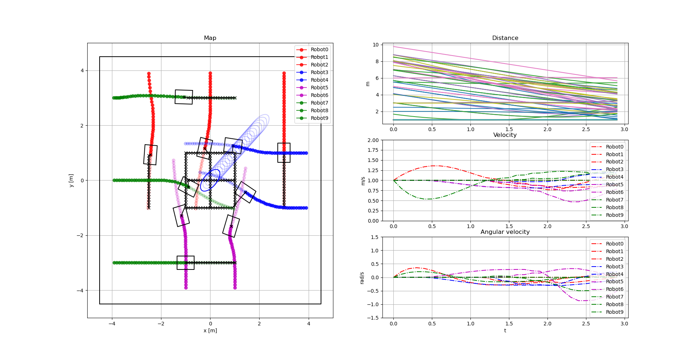

University Project
Fleet Coordination
Collision avoidance and coordination of a fleet of mobile wheeled robots using Non-Linear Model Predictive Control.

Resources
Explore the project.
View the source code or read the published research behind the project.
Overview
About the project
Fleet Coordination is a project developed during my studies at Chalmers University of Technology. The goal was to control a fleet of mobile wheeled robots while avoiding collisions with other robots, static obstacles and dynamic obstacles.
The project used Non-Linear Model Predictive Control (NMPC) to modify the individual robot trajectories while maintaining collision-free motion.
Both centralized and distributed coordination schemes were investigated and compared. The results showed promising performance for both approaches, with the distributed approach showing favorable scaling as the number of robots increased.
Approach
Centralized vs distributed control
The project investigated two different approaches for coordinating the robot fleet. In the centralized approach, the robots were coordinated by a common optimization problem. In the distributed approach, the robots performed their coordination in a more decentralized manner.
The individual robot trajectories were assumed to be given initially. The control system then altered these trajectories to prevent collisions with other robots and both static and dynamic obstacles.
The project also evaluated the computational complexity of the two approaches by measuring solver times for different numbers of robots and different scenarios.
Technology
Technologies used
- Python
- Non-Linear MPC
- Optimal Control
- Robot Simulation
- Collision Avoidance
- OpEn
- Rust
- C
- Anaconda
- Git
Education
Chalmers University of Technology
This project was completed during my Master's studies in Systems, Controls and Mechatronics at Chalmers University of Technology.